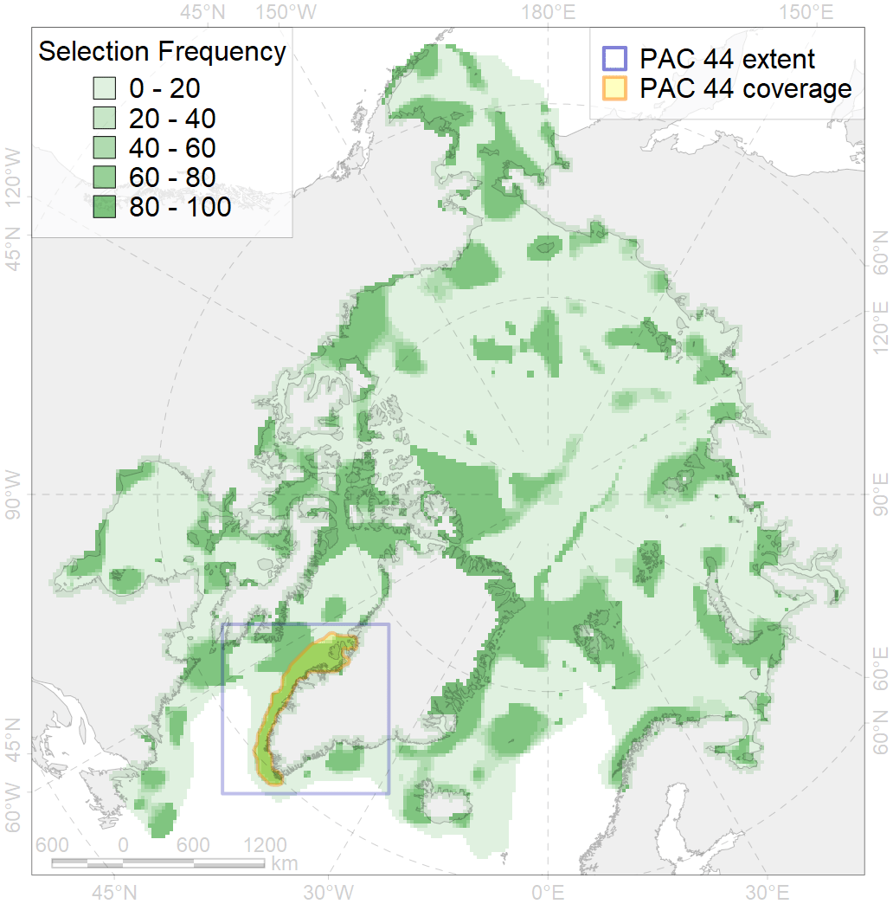
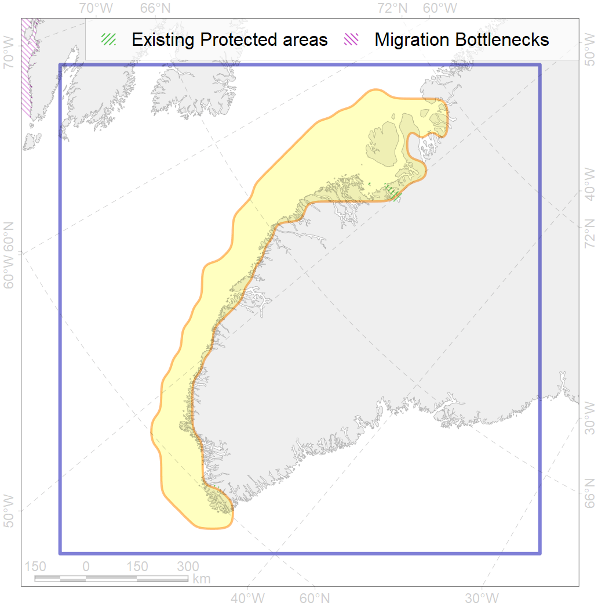

44
For more information regarding this PAC and to conduct custom spatial analysis using the PAC data or any spatial query, please consult Accenter.

1
CFs entirely within the PAC area
25
CFs at least 25% within the PAC area
21
CFs with at least 50% of their target achieved in the PAC
45
CFs with at least half of their target achieved in the PAC
| CF ID | CF Name | Proportion in the PAC | Conservation Target | Contribution to ArcNet Target Achievement | PAC’s Contribution to the Achieved Target |
|---|---|---|---|---|---|
| 7260 | SW Greenland Bank | 100.0% | 70.0% | 142.9% | 100.0% |
| 5068 | Minke whale feeding areas in the Western Atlantic | 98.1% | 12.0% | 799.7% | 99.7% |
| 7259 | SW Greenland Bank | 89.6% | 70.0% | 128.0% | 89.6% |
| 7152 | III.4.1. Southwest Greenland shelf | 85.5% | 11.8% | 692.8% | 97.6% |
| 5040 | Bowhead whale spring concentrations in the Baffin Bay | 80.8% | 72.0% | 98.5% | 98.0% |
| 5056 | Harbour porpoise summer feeding areas in West Greenland | 80.7% | 12.0% | 635.6% | 96.2% |
| 7153 | III.4.1.1. SW Greenland medium and low profile shelf | 80.6% | 11.5% | 648.4% | 92.2% |
| 6019 | Long-tailed duck (Clangula hyemalis) Greenland wintering grounds | 80.0% | 76.8% | 95.1% | 94.7% |
| 5100 | White-beaked dolphin feeding area in the Western North Atlantic | 78.1% | 12.0% | 595.5% | 94.2% |
| 7154 | III.4.1.2. SW Greenland glacial troughs | 74.2% | 16.6% | 437.1% | 75.6% |
| 6059 | Common eider (Somateria mollissima borealis) West Greenland wintering grounds | 69.1% | 67.2% | 97.5% | 96.3% |
| 3123 | Polynyas distribution in the West Greenland region | 68.2% | 12.0% | 562.8% | 94.0% |
| 6055 | Common eider (Somateria mollissima borealis) NE Canada wintering grounds | 60.2% | 67.2% | 84.9% | 84.6% |
| 6071 | King eider (Somateria spectabilis) Canadian moulting&migration stopovers | 50.2% | 48.0% | 95.0% | 75.3% |
| 7243 | Kelp forests of western Greenland | 50.1% | 30.0% | 145.5% | 87.9% |
| 3021 | Marginal Ice Zone distribution in April in the Baffin Bay LME | 45.8% | 12.0% | 372.7% | 57.4% |
| 5006 | Beluga of the Baffin Bay winter distribution | 45.3% | 48.0% | 89.9% | 46.0% |
| 6058 | Common eider (Somateria mollissima borealis) West Greenland breeding&moulting grounds | 43.7% | 67.2% | 57.6% | 57.3% |
| 7052 | cold corals of Canada and Western Greenland | 34.8% | 50.0% | 63.2% | 42.0% |
| 5060 | Humpback whale summer feeding areas in the Northwest Atlantic | 31.3% | 24.0% | 123.4% | 56.4% |
| 1003 | Atlantic Walrus Wintering Areas in Canada | 30.7% | 67.2% | 43.4% | 37.9% |
| 6072 | King eider (Somateria spectabilis) Canadian winetring grounds | 29.5% | 48.0% | 58.0% | 50.0% |
| 6018 | Long-tailed duck (Clangula hyemalis) Greenland moulting&migration stopovers | 28.5% | 76.8% | 34.5% | 34.4% |
| 2064 | Bearded seal concentration areas in Greenland | 26.0% | 24.0% | 108.3% | 30.3% |
| 6052 | Common eider (Somateria mollissima borealis) East Greenland breeding&moulting grounds | 25.2% | 67.2% | 36.3% | 36.1% |
| 7240 | Kelp forests of southern Greenland | 21.3% | 15.0% | 130.0% | 76.6% |
| 5038 | Blue whale summer feeding areas in the Northwest Atlantic | 21.3% | 25.2% | 78.6% | 49.9% |
| 5050 | Fin whale summer feeding areas in the Northwest Atlantic | 19.6% | 26.4% | 69.0% | 36.6% |
| 5102 | Bottlenose whale summer feeding areas in the Northwest Atlantic | 18.0% | 12.0% | 109.6% | 36.1% |
| 2007 | Bearded seal whelping areas in the Baffin Bay | 16.8% | 24.0% | 67.1% | 23.4% |
| 6091 | Little auk (Alle alle alle) breeding colonies in Greenland and Canada buffer feeding area | 16.3% | 48.0% | 32.8% | 23.4% |
| 5078 | Narwhal Eclipse Sound stock winter core distribution | 16.1% | 72.0% | 20.2% | 19.6% |
| 4085 | Fish zoogeography, Arctic Region, Subarctic Transitional-Atlantic Province, Labrador – S Greenland District | 14.8% | 8.6% | 157.7% | 33.2% |
| 5115 | Narwhal wintering areas | 14.4% | 24.0% | 52.6% | 26.7% |
| 5104 | Bowhead whale Baffin population winter distribution | 13.9% | 24.0% | 49.9% | 24.7% |
| 7155 | III.4.2. Southwest Greenland slope | 12.6% | 15.3% | 75.4% | 19.2% |
| 6029 | Glaucous gull (Larus hyperboreus euceretes) breeding grounds | 12.0% | 12.0% | 84.3% | 19.4% |
| 4056 | Distribution of the American Plaice (Hippoglossoides platessoides), European populations | 11.9% | 3.0% | 362.1% | 23.1% |
| 6101 | Common murre (Uria aalge aalge) breeding grounds buffer feeding area | 11.4% | 36.0% | 29.9% | 21.1% |
| 4048 | Feeding/nursery area of the ogac (Gadus ogac ) | 11.2% | 12.0% | 88.7% | 22.1% |
| 4028 | Feeding/migration area of the Atlantic salmon (Salmo salar) American populations | 9.5% | 12.0% | 72.8% | 23.4% |
| 6034 | Ivory gull (Pagophila eburnea) Atlantic wintering grounds | 9.4% | 21.6% | 39.3% | 19.7% |
| 6041 | Ivory gull (Pagophila eburnea) postbreeding grounds in the Canadian Arctic | 9.3% | 21.6% | 41.8% | 16.3% |
| 7150 | III.3.1.2. NW Greenland glacial troughs | 9.2% | 8.8% | 91.6% | 15.1% |
| 6015 | Black guillemot (Cepphus grylle mandti) breeding grounds | 7.6% | 12.0% | 57.2% | 12.3% |
| 4055 | Range of the Shorthorn Sculpin (Myoxocephalus scorpius), American populations | 7.0% | 3.0% | 217.6% | 12.3% |
| 7148 | III.3. 1. Northwest Greenland shelf | 6.6% | 11.5% | 41.8% | 10.3% |
| 4032 | Range of the Arctic skate (Amblyraja hyperborea) | 6.5% | 3.0% | 196.2% | 15.1% |
| 7247 | seagrasses of the High Arctic | 6.2% | 30.0% | 20.8% | 11.5% |
| 7171 | VII.1. Greenland Sea and Fram Strait Basin basins VII.1.1. Rises (slope foot) | 6.1% | 14.0% | 31.5% | 26.2% |
| 7163 | III.6.2. Southwest Greenland slope | 6.0% | 13.4% | 36.9% | 16.0% |
| 6002 | Little Auk (Alle alle alle) winetring grounds | 5.8% | 24.0% | 22.1% | 15.3% |
| 6049 | Black-legged kittiwake (Rissa tridactyla tridactyla) wintering grounds | 5.3% | 32.4% | 15.3% | 15.3% |
| 7149 | III.3.1.1. NW Greenland medium and low profile shelf | 5.2% | 11.1% | 22.9% | 5.7% |
| 2019 | Harbour seal range in the North Atlantic region | 5.1% | 6.0% | 78.3% | 11.9% |
| 4029 | Feeding area of the Arctic charr (Salvelinus alpinus), anadromous populations | 5.0% | 38.4% | 12.0% | 10.4% |
| 6031 | Little auk (Alle alle alle) breeding colonies in Greenland and Canada | 4.9% | 72.0% | 6.7% | 6.5% |
| 6106 | Thick-billed murre (Uria lomvia lomvia) breeding colonies buffer feeding area | 4.8% | 48.0% | 9.4% | 6.9% |
| 4046 | Range of the Thorny Skate (Amblyraja radiata) | 4.8% | 7.2% | 60.7% | 11.4% |
| 6075 | Common murre (Uria aalge aalge) breeding grounds | 4.6% | 54.0% | 8.5% | 8.1% |
| 7161 | III.6.1.1. SE Greenland medium and low profile shelf | 4.6% | 12.1% | 35.7% | 9.8% |
| 7034 | North-western Greenland region | 4.6% | 20.6% | 18.5% | 11.3% |
| 5103 | Bowhead whale Baffin population spring-autumn distribution | 4.6% | 24.0% | 17.1% | 9.4% |
| 7160 | III.6.1. Southeast Greenland shelf | 4.6% | 10.4% | 41.0% | 10.1% |
| 4059 | Range of the Greenland Halibut (Reinhardtius hippoglossoides) | 4.4% | 3.0% | 131.6% | 11.1% |
| 4049 | Range of the Haddock (Melanogrammus aeglefinus) | 4.2% | 6.0% | 65.7% | 10.5% |
| 5042 | Bowhead whale winter concentrations in the Baffin Bay | 4.2% | 48.0% | 8.8% | 6.0% |
| 4045 | Feeding/migration area of the Pink Salmon (Oncorhynchus gorbuscha), native distribution | 4.2% | 6.0% | 63.6% | 10.4% |
| 5112 | Arctic Cetaceans (beluga, bowhead, narwhal) winter habitats as predicterd by MIZ | 4.1% | 40.0% | 9.5% | 7.8% |
| 6083 | Thick-billed murre (Uria lomvia lomvia) wintering grounds | 3.9% | 24.0% | 14.7% | 10.3% |
| 4017 | Feeding/ migration area of the Greenland Shark (Somniosus microcephalus) | 3.6% | 21.6% | 15.0% | 8.8% |
| 6099 | Black-legged kittiwake (Rissa tridactyla tridactyla) breeding colonies buffer feeding area | 3.6% | 64.8% | 5.1% | 5.1% |
| 4003 | Range of the Atlantic Capelin (Mallotus villosus) | 3.3% | 3.0% | 103.5% | 8.8% |
| 4037 | Distribution of the Glacial cod (Arctogadus glacialis) | 3.1% | 9.0% | 31.6% | 7.6% |
| 6023 | Atlantic puffin (Fratercula arctica naumanni) wintering grounds | 3.1% | 24.0% | 11.8% | 9.6% |
| 9002 | polar bear of the BB (Baffin Bay) subpopulation distribution | 3.0% | 32.4% | 7.1% | 5.8% |
| 2044 | Ringed seal whelping areas in the Baffin Bay region | 2.9% | 24.0% | 10.3% | 5.0% |
| 4053 | Range of the Fourhorn Sculpin (Myoxocephalus quadricornis), Euro-Asian populations | 2.9% | 3.0% | 91.3% | 5.4% |
| 6076 | Common murre (Uria aalge aalge) wintering grounds | 2.7% | 18.0% | 13.0% | 7.0% |